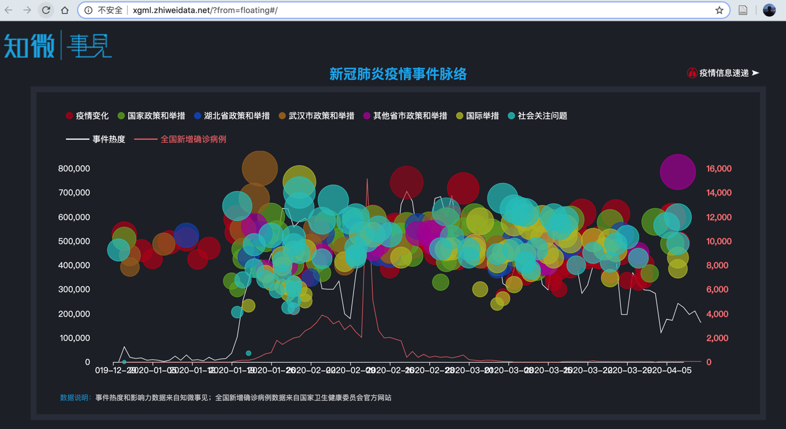
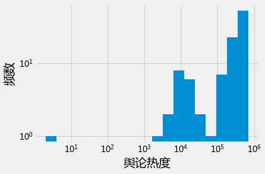
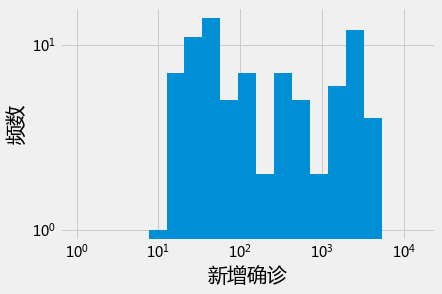
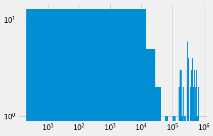
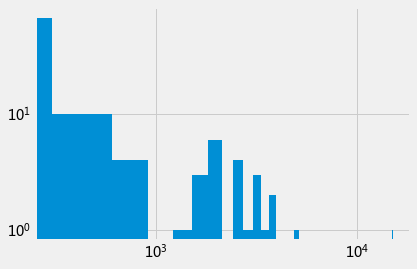
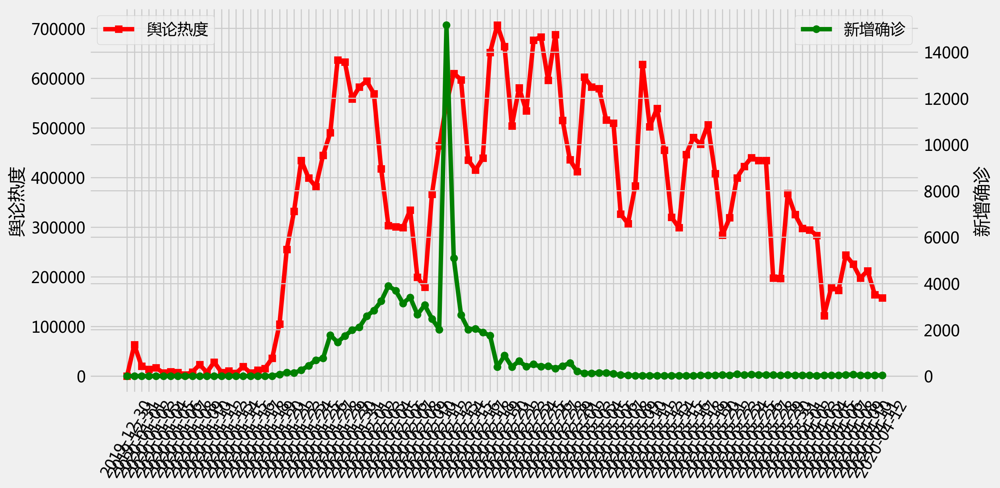
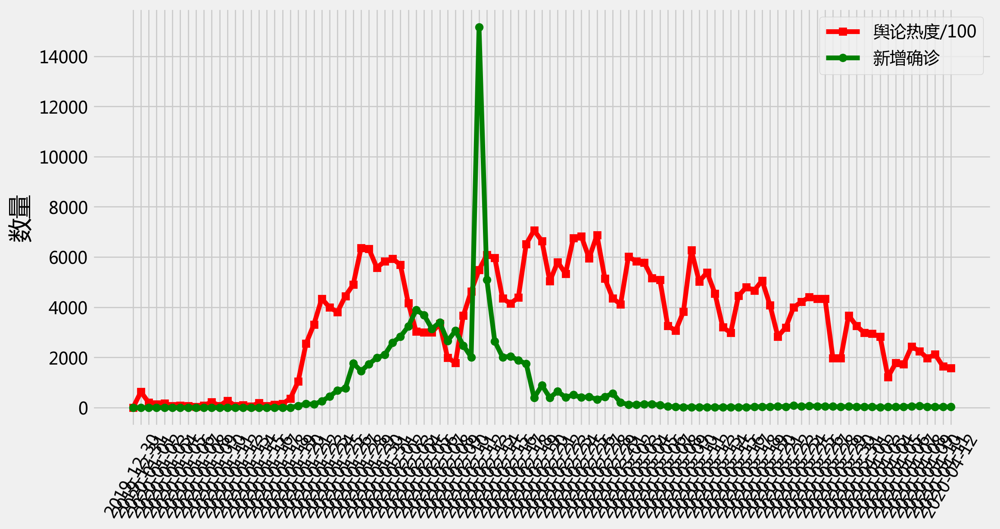
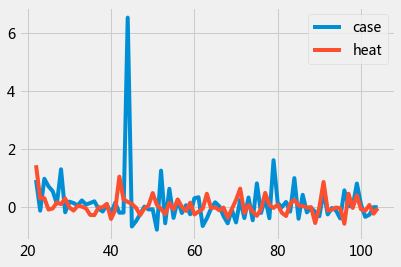
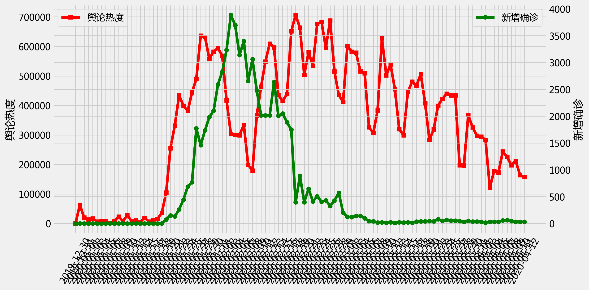
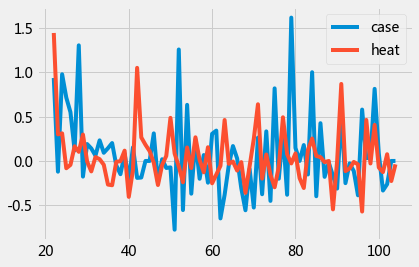

社交媒体可以预测新冠疫情吗？¶
基于知微事见数据
http://xgml.zhiweidata.net/?from=floating#/

%%html
<iframe frameborder="no" border="0" marginwidth="0" marginheight="0"
width=900 height=600
src="//xgml.zhiweidata.net/?from=floating#/">
</iframe>
import pylab as plt
import pandas as pd
import seaborn as sns
import json
#j = json.load(open('../data/zhiwei_line.json'))
j = json.load(open('../data/zhiwei_line0417.json'))
df = pd.DataFrame(j)
df.tail()
| time | voice | heat | case | allCase | |
|---|---|---|---|---|---|
| 100 | 2020-04-08 | 225533 | 63 | 81865 | |
| 101 | 2020-04-09 | 197162 | 42 | 81907 | |
| 102 | 2020-04-10 | 212046 | 31 | 81953 | |
| 103 | 2020-04-11 | 164010 | 31 | 82052 | |
| 104 | 2020-04-12 | 157726 | 31 | 82160 |
df.info()
<class 'pandas.core.frame.DataFrame'>
RangeIndex: 105 entries, 0 to 104
Data columns (total 5 columns):
# Column Non-Null Count Dtype
--- ------ -------------- -----
0 time 105 non-null object
1 voice 105 non-null object
2 heat 105 non-null object
3 case 105 non-null object
4 allCase 105 non-null object
dtypes: object(5)
memory usage: 4.2+ KB
df['time'][:3]
0 2019-12-30
1 2019-12-31
2 2020-01-01
Name: time, dtype: object
df['heat'] = [np.float(i) for i in df['heat']]
df['case'] = [np.int(i) for i in df['case']]
df['heat']
0 2.00000
1 62978.12912
2 19890.45538
3 13725.50326
4 16509.66362
...
100 225533.00000
101 197162.00000
102 212046.00000
103 164010.00000
104 157726.00000
Name: heat, Length: 105, dtype: float64
plt.figure(figsize = [10, 6])
plt.plot(df['heat'], df['case'], 'bo')
plt.yscale('log')
#plt.xscale('log')
plt.ylabel('新增确诊', fontsize = 16)
plt.xlabel('舆论热度', fontsize = 16)
plt.xlim([100000, 800000])
plt.show()

MIN = df['heat'].min()
MAX = df['heat'].max()
bins = 10 ** np.linspace( np.log10(MIN), np.log10(MAX),20 )
plt.hist(df['heat'], bins = bins)
plt.xlabel('舆论热度', fontsize = 20)
plt.ylabel('频数', fontsize = 20)
plt.xscale('log')
plt.yscale('log')
plt.show()

MIN = df['case'].min()+1
MAX = df['case'].max()
bins = 10 ** np.linspace( np.log10(MIN), np.log10(MAX),20 )
plt.hist(df['case'], bins = bins)
plt.xlabel('新增确诊', fontsize = 20)
plt.ylabel('频数', fontsize = 20)
plt.xscale('log')
plt.yscale('log')
plt.show()

plt.hist( df['heat'], bins = 50)
plt.yscale('log')
plt.xscale('log')
plt.show()

#plt.hist( df['heat'], bins = 50)
plt.hist( df['case'], bins = 50)
plt.yscale('log')
plt.xscale('log')
plt.show()

# plot
fig = plt.figure(figsize=(12,6),dpi = 200)
plt.style.use('fivethirtyeight')
ax1=fig.add_subplot(111)
ax1.plot(df['time'], df['heat'], 'r-s')
ax1.set_ylabel('舆论热度', fontsize = 16)
ax1.tick_params(axis='x', rotation=60)
ax1.legend(('舆论热度',),loc='upper left')
#ax1.set_yscale('log')
ax2=ax1.twinx()
ax2.plot(df['time'], df['case'], 'g-o')
ax2.set_ylabel('新增确诊', fontsize = 16)
ax2.legend(('新增确诊',),loc='upper right')
#ax2.set_yscale('log')
plt.show()

# plot
plt.figure(figsize=(12, 6), dpi = 200)
plt.style.use('fivethirtyeight')
plt.plot(df['time'], [float(i)/100 for i in df['heat']], 'r-s', label = '舆论热度/100')
plt.plot(df['time'], [int(i) for i in df['case']], 'g-o', label = '新增确诊')
plt.legend()
plt.xticks(rotation=60)
plt.ylabel('数量', fontsize = 20)
plt.show()

格兰杰因果检验¶
http://www.statsmodels.org/dev/generated/statsmodels.tsa.stattools.grangercausalitytests.html
import statsmodels.api as sm
from statsmodels.tsa.stattools import grangercausalitytests
import numpy as np
help(df.pct_change)
Percentage change between the current and a prior element.
Computes the percentage change from the immediately previous row by
default. This is useful in comparing the percentage of change in a time
series of elements.
The Null hypothesis for grangercausalitytests¶
H0: the time series in the second column, x2, does NOT Granger cause the time series in the first column, x1.
Grange causality means that past values of x2 have a statistically significant effect on the current value of x1, taking past values of x1 into account as regressors. We reject the null hypothesis that x2 does not Granger cause x1 if the pvalues are below a desired size of the test.
grangercausalitytests?
# The data for test whether the time series in the second column Granger
# causes the time series in the first column. Missing values are not
# supported.
data = df[21:][['case','heat' ]].pct_change().dropna()
data.head()
| case | heat | |
|---|---|---|
| 22 | 0.935065 | 1.442401 |
| 23 | -0.120805 | 0.299869 |
| 24 | 0.977099 | 0.310704 |
| 25 | 0.714286 | -0.081957 |
| 26 | 0.549550 | -0.044222 |
data.plot();

gc_res = grangercausalitytests(data,4)
Granger Causality
number of lags (no zero) 1
ssr based F test: F=0.2522 , p=0.6169 , df_denom=79, df_num=1
ssr based chi2 test: chi2=0.2618 , p=0.6089 , df=1
likelihood ratio test: chi2=0.2613 , p=0.6092 , df=1
parameter F test: F=0.2522 , p=0.6169 , df_denom=79, df_num=1
Granger Causality
number of lags (no zero) 2
ssr based F test: F=12.3885 , p=0.0000 , df_denom=76, df_num=2
ssr based chi2 test: chi2=26.4070 , p=0.0000 , df=2
likelihood ratio test: chi2=22.8563 , p=0.0000 , df=2
parameter F test: F=12.3885 , p=0.0000 , df_denom=76, df_num=2
Granger Causality
number of lags (no zero) 3
ssr based F test: F=8.8247 , p=0.0000 , df_denom=73, df_num=3
ssr based chi2 test: chi2=29.0127 , p=0.0000 , df=3
likelihood ratio test: chi2=24.7550 , p=0.0000 , df=3
parameter F test: F=8.8247 , p=0.0000 , df_denom=73, df_num=3
Granger Causality
number of lags (no zero) 4
ssr based F test: F=6.1783 , p=0.0003 , df_denom=70, df_num=4
ssr based chi2 test: chi2=27.8906 , p=0.0000 , df=4
likelihood ratio test: chi2=23.8863 , p=0.0001 , df=4
parameter F test: F=6.1783 , p=0.0003 , df_denom=70, df_num=4
data1 = df[21:][['heat','case']].pct_change().dropna()
gc_res1 = grangercausalitytests(data1,4)
Granger Causality
number of lags (no zero) 1
ssr based F test: F=0.0044 , p=0.9473 , df_denom=79, df_num=1
ssr based chi2 test: chi2=0.0046 , p=0.9461 , df=1
likelihood ratio test: chi2=0.0046 , p=0.9461 , df=1
parameter F test: F=0.0044 , p=0.9473 , df_denom=79, df_num=1
Granger Causality
number of lags (no zero) 2
ssr based F test: F=0.0877 , p=0.9162 , df_denom=76, df_num=2
ssr based chi2 test: chi2=0.1869 , p=0.9108 , df=2
likelihood ratio test: chi2=0.1866 , p=0.9109 , df=2
parameter F test: F=0.0877 , p=0.9162 , df_denom=76, df_num=2
Granger Causality
number of lags (no zero) 3
ssr based F test: F=0.7988 , p=0.4985 , df_denom=73, df_num=3
ssr based chi2 test: chi2=2.6262 , p=0.4529 , df=3
likelihood ratio test: chi2=2.5840 , p=0.4603 , df=3
parameter F test: F=0.7988 , p=0.4985 , df_denom=73, df_num=3
Granger Causality
number of lags (no zero) 4
ssr based F test: F=0.8460 , p=0.5008 , df_denom=70, df_num=4
ssr based chi2 test: chi2=3.8190 , p=0.4311 , df=4
likelihood ratio test: chi2=3.7296 , p=0.4438 , df=4
parameter F test: F=0.8460 , p=0.5008 , df_denom=70, df_num=4
without peak¶
df['case'][df['time']=='2020-02-12'] = np.nan
df['case'][df['time']=='2020-02-13'] = np.nan
df = df.fillna(method='ffill')
/opt/anaconda3/lib/python3.7/site-packages/ipykernel_launcher.py:1: SettingWithCopyWarning:
A value is trying to be set on a copy of a slice from a DataFrame
See the caveats in the documentation: https://pandas.pydata.org/pandas-docs/stable/user_guide/indexing.html#returning-a-view-versus-a-copy
"""Entry point for launching an IPython kernel.
# df = pd.read_excel('zhiwei_line_no_peak.xlsx')
df['heat'] = [float(i) for i in df['heat']]
df['case'] = [int(i) for i in df['case']]
df.tail()
| time | voice | heat | case | allCase | |
|---|---|---|---|---|---|
| 100 | 2020-04-08 | 225533.0 | 63 | 81865 | |
| 101 | 2020-04-09 | 197162.0 | 42 | 81907 | |
| 102 | 2020-04-10 | 212046.0 | 31 | 81953 | |
| 103 | 2020-04-11 | 164010.0 | 31 | 82052 | |
| 104 | 2020-04-12 | 157726.0 | 31 | 82160 |
# plot
fig = plt.figure(figsize=(12,6),dpi = 200)
plt.style.use('fivethirtyeight')
ax1=fig.add_subplot(111)
ax1.plot(df['time'], df['heat'], 'r-s')
ax1.set_ylabel('舆论热度', fontsize = 16)
ax1.tick_params(axis='x', rotation=60)
ax1.legend(('舆论热度',),loc='upper left')
ax2=ax1.twinx()
ax2.plot(df['time'], df['case'], 'g-o')
ax2.set_ylabel('新增确诊', fontsize = 16)
ax2.legend(('新增确诊',),loc='upper right')
plt.show()

data = df[21:][['case','heat' ]].pct_change().dropna()
data.plot();

gc_res = grangercausalitytests(data,4)
Granger Causality
number of lags (no zero) 1
ssr based F test: F=0.0104 , p=0.9189 , df_denom=79, df_num=1
ssr based chi2 test: chi2=0.0108 , p=0.9172 , df=1
likelihood ratio test: chi2=0.0108 , p=0.9172 , df=1
parameter F test: F=0.0104 , p=0.9189 , df_denom=79, df_num=1
Granger Causality
number of lags (no zero) 2
ssr based F test: F=3.7056 , p=0.0291 , df_denom=76, df_num=2
ssr based chi2 test: chi2=7.8988 , p=0.0193 , df=2
likelihood ratio test: chi2=7.5370 , p=0.0231 , df=2
parameter F test: F=3.7056 , p=0.0291 , df_denom=76, df_num=2
Granger Causality
number of lags (no zero) 3
ssr based F test: F=1.6880 , p=0.1771 , df_denom=73, df_num=3
ssr based chi2 test: chi2=5.5496 , p=0.1357 , df=3
likelihood ratio test: chi2=5.3656 , p=0.1469 , df=3
parameter F test: F=1.6880 , p=0.1771 , df_denom=73, df_num=3
Granger Causality
number of lags (no zero) 4
ssr based F test: F=1.1838 , p=0.3255 , df_denom=70, df_num=4
ssr based chi2 test: chi2=5.3439 , p=0.2538 , df=4
likelihood ratio test: chi2=5.1709 , p=0.2702 , df=4
parameter F test: F=1.1838 , p=0.3255 , df_denom=70, df_num=4
data = df[21:][['heat','case' ]].pct_change().dropna()
gc_res = grangercausalitytests(data,4)
Granger Causality
number of lags (no zero) 1
ssr based F test: F=0.3389 , p=0.5621 , df_denom=79, df_num=1
ssr based chi2 test: chi2=0.3518 , p=0.5531 , df=1
likelihood ratio test: chi2=0.3511 , p=0.5535 , df=1
parameter F test: F=0.3389 , p=0.5621 , df_denom=79, df_num=1
Granger Causality
number of lags (no zero) 2
ssr based F test: F=0.4490 , p=0.6400 , df_denom=76, df_num=2
ssr based chi2 test: chi2=0.9571 , p=0.6197 , df=2
likelihood ratio test: chi2=0.9514 , p=0.6214 , df=2
parameter F test: F=0.4490 , p=0.6400 , df_denom=76, df_num=2
Granger Causality
number of lags (no zero) 3
ssr based F test: F=0.2301 , p=0.8751 , df_denom=73, df_num=3
ssr based chi2 test: chi2=0.7565 , p=0.8598 , df=3
likelihood ratio test: chi2=0.7530 , p=0.8607 , df=3
parameter F test: F=0.2301 , p=0.8751 , df_denom=73, df_num=3
Granger Causality
number of lags (no zero) 4
ssr based F test: F=0.3046 , p=0.8740 , df_denom=70, df_num=4
ssr based chi2 test: chi2=1.3749 , p=0.8485 , df=4
likelihood ratio test: chi2=1.3631 , p=0.8506 , df=4
parameter F test: F=0.3046 , p=0.8740 , df_denom=70, df_num=4
test the tails¶
#df = pd.read_excel('zhiwei_line_no_peak.xlsx')
df['heat'] = [float(i) for i in df['heat']]
df['case'] = [int(i) for i in df['case']]
df[40:]
| time | voice | heat | case | allCase | |
|---|---|---|---|---|---|
| 40 | 2020-02-08 | 198955.9754 | 2656 | 37198 | |
| 41 | 2020-02-09 | 178865.4643 | 3062 | 40171 | |
| 42 | 2020-02-10 | 366537.5655 | 2478 | 42638 | |
| 43 | 2020-02-11 | 463839.3934 | 2015 | 44653 | |
| 44 | 2020-02-12 | 548711.0169 | 2015 | 59804 | |
| ... | ... | ... | ... | ... | ... |
| 100 | 2020-04-08 | 225533.0000 | 63 | 81865 | |
| 101 | 2020-04-09 | 197162.0000 | 42 | 81907 | |
| 102 | 2020-04-10 | 212046.0000 | 31 | 81953 | |
| 103 | 2020-04-11 | 164010.0000 | 31 | 82052 | |
| 104 | 2020-04-12 | 157726.0000 | 31 | 82160 |
65 rows × 5 columns
data = df[40:][['heat','case' ]].pct_change().dropna()
gc_res = grangercausalitytests(data,3)
Granger Causality
number of lags (no zero) 1
ssr based F test: F=0.7319 , p=0.3957 , df_denom=60, df_num=1
ssr based chi2 test: chi2=0.7685 , p=0.3807 , df=1
likelihood ratio test: chi2=0.7638 , p=0.3821 , df=1
parameter F test: F=0.7319 , p=0.3957 , df_denom=60, df_num=1
Granger Causality
number of lags (no zero) 2
ssr based F test: F=0.8160 , p=0.4473 , df_denom=57, df_num=2
ssr based chi2 test: chi2=1.7752 , p=0.4117 , df=2
likelihood ratio test: chi2=1.7502 , p=0.4168 , df=2
parameter F test: F=0.8160 , p=0.4473 , df_denom=57, df_num=2
Granger Causality
number of lags (no zero) 3
ssr based F test: F=0.5435 , p=0.6546 , df_denom=54, df_num=3
ssr based chi2 test: chi2=1.8419 , p=0.6059 , df=3
likelihood ratio test: chi2=1.8146 , p=0.6118 , df=3
parameter F test: F=0.5435 , p=0.6546 , df_denom=54, df_num=3
data = df[40:][['case','heat' ]].pct_change().dropna()
gc_res = grangercausalitytests(data,3)
Granger Causality
number of lags (no zero) 1
ssr based F test: F=0.4303 , p=0.5143 , df_denom=60, df_num=1
ssr based chi2 test: chi2=0.4518 , p=0.5015 , df=1
likelihood ratio test: chi2=0.4502 , p=0.5022 , df=1
parameter F test: F=0.4303 , p=0.5143 , df_denom=60, df_num=1
Granger Causality
number of lags (no zero) 2
ssr based F test: F=1.7140 , p=0.1893 , df_denom=57, df_num=2
ssr based chi2 test: chi2=3.7286 , p=0.1550 , df=2
likelihood ratio test: chi2=3.6208 , p=0.1636 , df=2
parameter F test: F=1.7140 , p=0.1893 , df_denom=57, df_num=2
Granger Causality
number of lags (no zero) 3
ssr based F test: F=1.0282 , p=0.3875 , df_denom=54, df_num=3
ssr based chi2 test: chi2=3.4843 , p=0.3228 , df=3
likelihood ratio test: chi2=3.3884 , p=0.3355 , df=3
parameter F test: F=1.0282 , p=0.3875 , df_denom=54, df_num=3
Spurous Correlation¶
http://www.tylervigen.com/spurious-correlations
import numpy as np
suicide = [5427,5688,6198,6462,6635,7336,7248,7491,8161,8578,9000]
spending = [18.079,18.594,19.753,20.734,20.831,23.029,23.597,23.584,25.525,27.731,29.449]
d = np.array([suicide, spending])
df = pd.DataFrame(d.T, columns = ['suicide', 'spending']) # .pct_change().dropna()
data = df[['suicide','spending' ]].pct_change().dropna()
gc_res = grangercausalitytests(data,2)
Granger Causality
number of lags (no zero) 1
ssr based F test: F=7.6049 , p=0.0330 , df_denom=6, df_num=1
ssr based chi2 test: chi2=11.4073 , p=0.0007 , df=1
likelihood ratio test: chi2=7.3680 , p=0.0066 , df=1
parameter F test: F=7.6049 , p=0.0330 , df_denom=6, df_num=1
Granger Causality
number of lags (no zero) 2
ssr based F test: F=0.5180 , p=0.6408 , df_denom=3, df_num=2
ssr based chi2 test: chi2=2.7627 , p=0.2512 , df=2
likelihood ratio test: chi2=2.3731 , p=0.3053 , df=2
parameter F test: F=0.5180 , p=0.6408 , df_denom=3, df_num=2
data = df[['spending', 'suicide' ]].pct_change().dropna()
gc_res = grangercausalitytests(data,2)
Granger Causality
number of lags (no zero) 1
ssr based F test: F=2.5229 , p=0.1633 , df_denom=6, df_num=1
ssr based chi2 test: chi2=3.7844 , p=0.0517 , df=1
likelihood ratio test: chi2=3.1590 , p=0.0755 , df=1
parameter F test: F=2.5229 , p=0.1633 , df_denom=6, df_num=1
Granger Causality
number of lags (no zero) 2
ssr based F test: F=0.1465 , p=0.8695 , df_denom=3, df_num=2
ssr based chi2 test: chi2=0.7814 , p=0.6766 , df=2
likelihood ratio test: chi2=0.7455 , p=0.6888 , df=2
parameter F test: F=0.1465 , p=0.8695 , df_denom=3, df_num=2